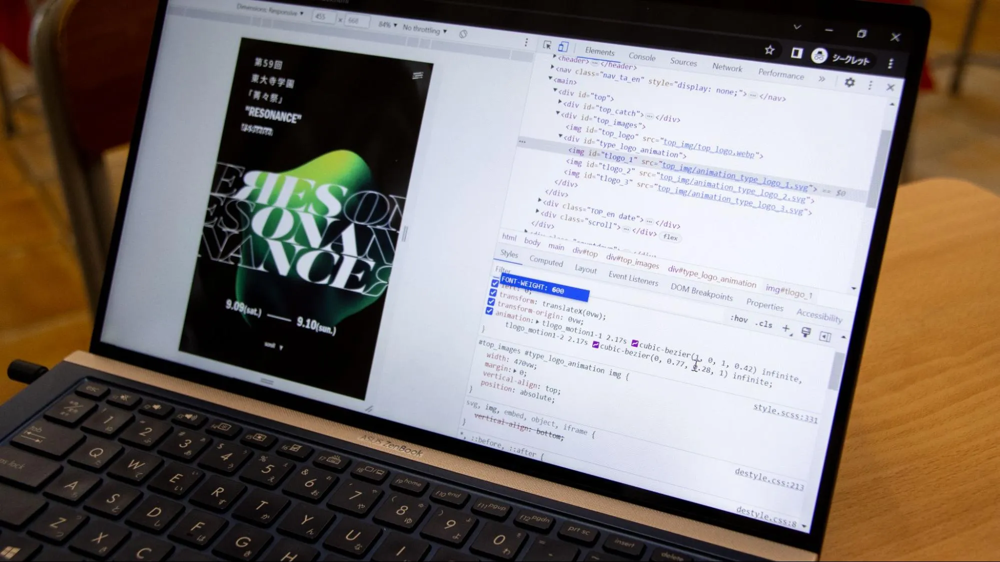
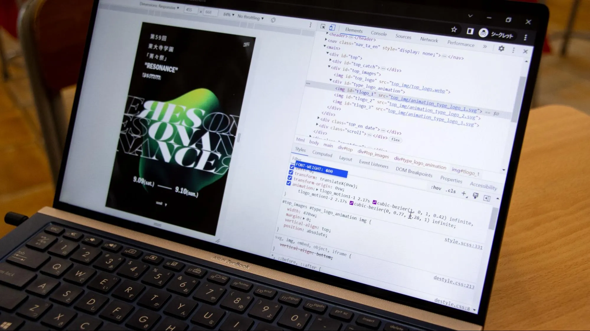

Webサイトができるまで...【技術＆製作セクション長インタビュー】
2023.06.05
PRパート長
ついに公開された第59回菁々祭公式Webサイト。そんなWebサイト制作を担当したPRパート技術セクション長と製作セクション長のお二人にお話を伺いました。
目次
Q.Webサイトのデザインというのはどのような流れで行われるのでしょうか。
Q.Webサイトのデザインはどこが特徴的だと思いますか。
Q.Webサイトのデザインをする上で参考にしたものはありますか。
Q.難しかったことは？
Q.そもそもコーディングとは？
Q.コーディングは誰がしたんですか？
Q.コーディングに興味を持ったきっかけは？
Q.今回のWebサイトではアニメーションが採用されているかと思うんですが、技術的な面で何か変化はありましたか？
Q.なぜスムーズな動作が？
Q.特にこだわったポイントは？
Q.現在未公開のページもあるようですが、なにか構想はあるのですか？
あとがき
まずはWebサイトのデザインについて聞きました。
製作セクション長
技術セクション長
Q.Webサイトのデザインというのはどのような流れで行われるのでしょうか。
「まずは2人で相談しながらどういうコンテンツが必要かとか、タイトルとかをまとめました。今年は実際にAdobeXDを使って技術的に可能なのかも話し合いながらデザインを進め、最後にコーディングって感じですね。」
「なかなか無茶言われましたけどね(笑)」
Q.Webサイトのデザインはどこが特徴的だと思いますか。
「やっぱり色々なデバイスで見られる可能性があるので、スマホ、パソコン、タブレットといったどんなデバイスでもデザインの統一性が失われないように心がけています。特にブログの記事の文字なんかはスマホとPCとでは一行に表示できる文字数が大きく違ってて、その中で”読みやすさ”につなげるためにどうしようかなと試行錯誤を繰り返しました。」
「あと、コーダーの人と仲良くするってのも結構むずかしかったですね。」
Q.Webサイトのデザインをする上で参考にしたものはありますか。
「とにかくたくさんのサイトを見ることはすごいしましたね。最近のトレンドを考えながら、その中で今回のテーマに必要なデザインやスタイルを採用していくみたいなのは考えてます。」
「SANKOU!っていう名前のサイトがあって、デザイン的に優れてるサイトを集めたサイトになっていて、そこのページを二人で見て 『このページがいい。』 『このページのココがいい』 みたいな感じで、まあある種パクリながらやっていた感じのところもあるので。」
「あと、例えば紙面だけでしか表現できないものとか、動画上でしか表現できないものとかもあるんですよ。Webサイト上にあるデザインだけを参考にすることによって、そういうのを排除できるんですね。Webサイト上で表現に既にされているものしか使えないので。そういう意味でも、やっぱりWebサイト自体を参考にするのは結構存在として大きかったと思います。」
Q.難しかったことは？
「技術のコーダー側とデザインを実際にどういう形で実現していくのかをすり合わせる作業ってのは、やっぱなかなか言葉では伝わらなかったりするところもあって...結構手間かかったというか、難しい作業ではありましたね。」
「結構細かいボタンみたいなのが多くて、例えば 『1ページ戻る』であったり、バツ印であったり。その中でも統一感みたいなのが必要かな？ っていう中で検討しながら進めました。マークとしての調和も必要だし、ウェブサイトと合わせるみたいな作業もやっぱ必要で。そういうところも苦戦しました。
続いてWebサイトのコーディングについて。
Q.そもそもコーディングとは？
「コーディングって聞いても基本的にはどういう作業かわからないと思うんですよ。でもこれが結構重要で。普通、ソフトウェア上で作るデザインってウェブサイトにそのまま公開できないんです。 Webサイトに公開するために”ある種の最適化”が必要で、 HTMLやCSSっていうマークアップ言語を使ってプログラミングみたいなことをしてやっていくんですよね。」
「もちろんソフト上でつくられたデザインをそのまま再現はできないので、 『表現をどういう風に書くか？』 『ここの図形の位置の設定はどのようになるか？ 』 などを考えながら進めていきます。」
「翻訳するってこと？」
「うん、まあ翻訳に近いかもしれない。ただ翻訳って言ったらなんか機械的じゃない？もうちょっと能動的にやってるから...まだ変換の方がマシか。」
「変換の方が機械的じゃない？ 翻訳の方が人間感じるけど。」
「あ、これが感覚のずれってやつか。」
「こういうのがあとあと響いてくる。」
Q.コーディングは誰がしたんですか？
「トップページは私がしたんですけど、他のページは後輩の技術セクション員にやってもらいました。」
「今年は複数人で作業することになって、それぞれのデータの共有をどうするかっていうのが課題だったんですよ。というのも去年のセクション長は全部一人でコーディングしてたので複数人で共有する必要がなかったんですけど、今回からはその必要があったので。なので今年はGitHubというサービスを活用して複数人でデータを共有しました。そのおかげでプロジェクトメンバー間のやりとりはうまくいっていますね。」
Q.コーディングに興味を持ったきっかけは？
「公式のWebサイトをつくる前に、パート員募集の特設サイトをデザインからコーディングまで一人でやったんですよ。それまでWebサイト制作は挫折経験もあって、難しいと思っていたんですけど、もう一回やってみたら結構楽しくて、そっからハマってコーディングにのめりこんでいきました。」
Q.今回のWebサイトではアニメーションが採用されているかと思うんですが、技術的な面で何か変化はありましたか？
「よくご存知ですね(笑)。去年はBootstrapとかのフレームワークを使用してコーディングをしていらっしゃったみたいなんです。ただ今年は基本的にはフレームワークをほとんど排除して、アニメーションの時だけ、javascriptのjQueryっていうのを使ってます。jQueryを使うことによって、結構自由なアニメーション表現ができるんですね。あとはCSSの機能で、トランジションとかアニメーションとかそういった動きをつけるものも多用しています。そこが去年と技術的には変化したポイントですね。」
Q.なぜスムーズな動作が？
「CM みたいやな。『どうしてこんなに！？』みたいな(笑)」
「このサイトはアニメーションを結構採用してるんですけど、動画埋め込みはしてなくてCSSのアニメーションとかjQueryとかの機能を使って実装しているからですね。」
「東大寺学園って結構山の奥にあるので、電波環境が悪いんですよ。それでも菁々祭の当日にトップページの快適性は確保したいので、フォントや画像はかなり削減に削減を重ねました。例えばフォントは源ノ角ゴシックを使用する予定だったんですが、最終的にはGoogle FontsのNoto Sansに変更しました。」
「トップページを軽くするっていう作業はデザイン的にもよく対立するところでした。デザインをよくしたいと思うと、より多くの画像を使いがちなんですけど、そういうところをいい感じにバランス取っていくというのが。」
Q.特にこだわったポイントは？
「トップページにあるページ紹介のグラフィックですね。Illustratorでシェイプを作ってからsvgでblenderに取り込み。そこからモディファイアーをいじってデータ作成して、書き出して素材として使用したので、けっこう手間がかかってます。他には、SPECIALのページにある製作セクション員の人たちが作ってくれた壁紙とかヘッダーとかアイコンとかは、もっとみんなでコンテンツとして盛り上げていくみたいな。」
「SPECIALのページは本来ウェブサイトのコンテンツが少なかったからできた企画で、その中にロゴがダウンロードできるところがあるんですけど、これはロゴを素材として使う際に正式なものを使ってもらえるようにという意味でもやっています。」
「コーディング・デザインとは関係ないけど、ブログの記事は結構見てほしいなと思ってて、これまでの菁々祭では知り得なかった裏の情報とか、『こんな経緯があって〜』とか。菁々祭の裏側を覗けるっていう点ですごい魅力的なコンテンツに仕上がってるかなと思うんで、ぜひ見ていって欲しいな。」
「他のページもね。」
「あと、トップページの 1 画面目って結構重要だと思うんですよ。そこでなにを伝えたいかっていうのを話した結果、テキストの横スクロールのアニメーションを作りたいという話になって。Adobe AfterEffectsで試作品とかを作ってやりましたね。」
「ここから専門的な話になるんで。まあ読み飛ばしてもらっていいんですけど、実は CSS の標準の機能だけでコーディングしたんです。CSSのanimationを使用すると、 transformのtranslateX()だけでは横スクロールができないんですよ。右までは行くんですけど、そこから切り返しができなくて、+αでオブジェクト自体の絶対位置(position: absolute)でleftを指定してleftとアニメーションのtransformのtranslateX 、この 2 つの値をアニメーション的に変化させることによって実現しています。ここは結構難しかった。かなり悩んだ。」
「フッターのコーディングなんですけど、デザインではかなり細かい文字が使われていたんですけれど、ブラウザの機能としてfont-sizeでは7pxより小さい文字が出ないんですよ。その場合に7ピクセルの文字が使いたいって話だったので...今回取った方法として14pxの文字にtransformのscale(0.5)をかけて7pxにするっていう処理をしてて、これがかなりコーディング的に面倒くさいです。判定は元の大きさなんですけど、 表示される文字の大きさが半分になっている、とか結構苦戦しましたね。 アクセシビリティ的な問題はあると思うんですけどね（笑）」
「そこは俺の中で譲れないポイントだったんで。」
「デザインという面でもアクセシビリティは重要なので拡大しないと見えないような文字を作るのは個人的にはどうなのかな～と思いますが」
「読めなくていい文字に適用してるので〜...」
「アニメーション的に結構こだわった部分としてはハンバーガーメニューが出てくるアニメーションですかね。まあこんな感じでデザインとのすり合わせが多かった、半分喧嘩みたいに。お前とはいつも喧嘩をする。」
Q.現在未公開のページもあるようですが、なにか構想はあるのですか？
「エキシビジョンとイベントについて、ちょっと色々結構考えてて。エキシビションは校内展示なので、「場所」っていう軸が必要だったりとか、イベントは「時間」という軸が必要だったりとか、そういう視点でわかりやすいようなWebサイトを構築できたらいいかなっていうアイデアはありますね。」
「まあ校舎複雑やからな。」
「校舎が複雑っていうのもあります。」
「初見殺しやろマジで絶対無理。」
あとがき
このWebサイトには制作陣のこだわりポイントがたくさんあるので、それも探しながらお楽しみください
菁々祭当日に向け、Webサイトもどんどん更新していきます！こうご期待！